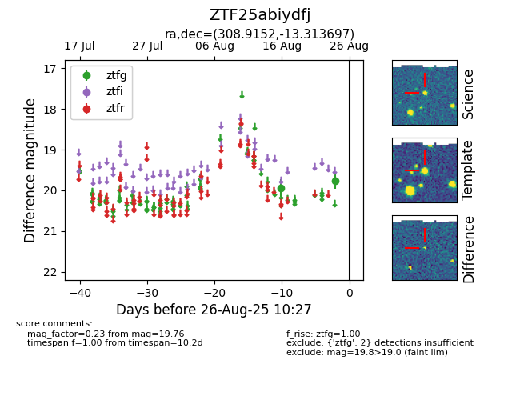

Target ZTF25abiydfj at 2025-08-26 10:27, see:
FINK: fink-portal.org/ZTF25abiydfj
Lasair: lasair-ztf.lsst.ac.uk/objects/ZTF25abiydfj
ALeRCE: alerce.online/object/ZTF25abiydfj
alt names
ZTF25abiydfj (ztf,fink)
coordinates:
equatorial (ra, dec) = (308.9152,-13.31370)
galactic (l, b) = (32.2738,-29.04009)
photometry
last ztfg=19.76
2 ztfg detections
